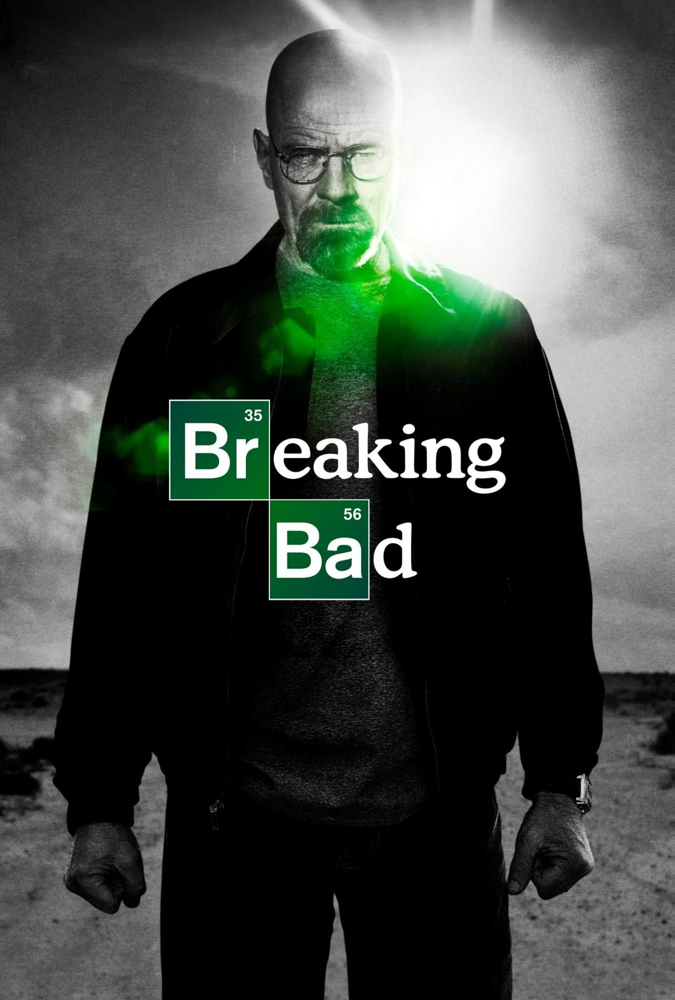
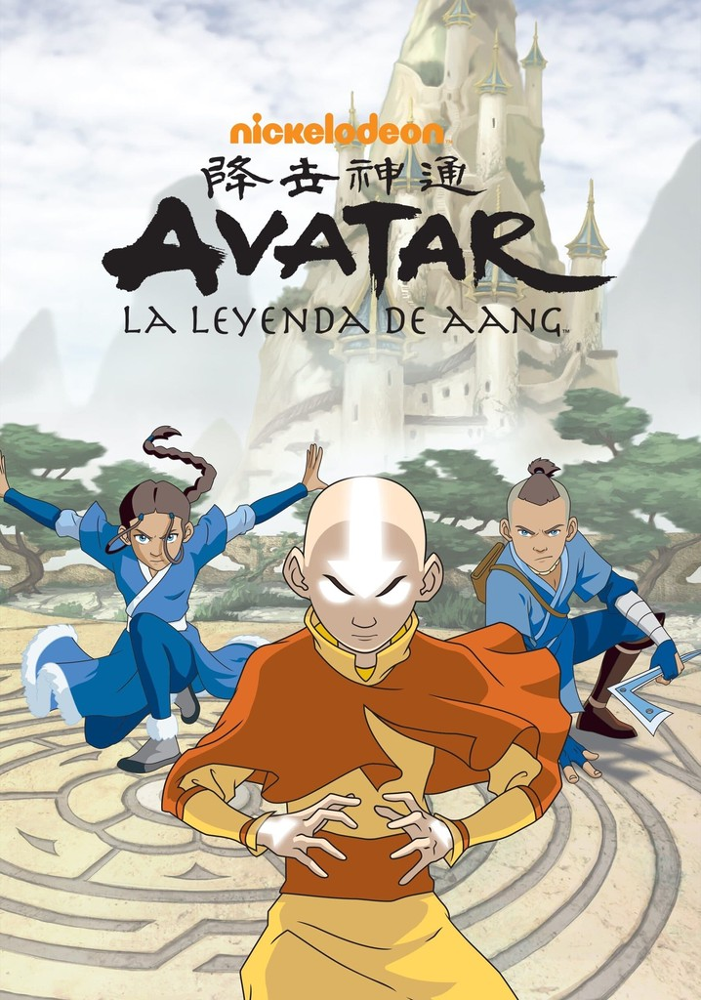
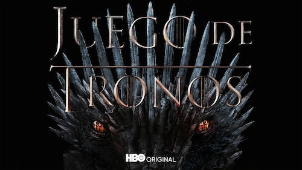
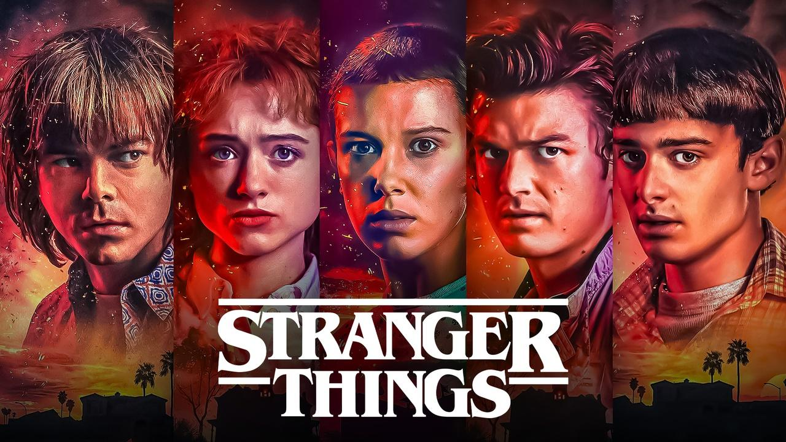

Descubre cuatro de las series más populares de la televisión.

Walter White es un profesor de química de Albuquerque que lleva una vida tranquila junto a su mujer Skyler y su hijo Walter Jr. Cuando descubre que tiene cáncer de pulmón, empieza a preocuparse por el futuro económico de su familia. Para conseguir dinero, decide fabricar metanfetamina junto a Jesse Pinkman, un antiguo alumno suyo. Gracias a sus conocimientos de química, Walter consigue producir una droga de gran calidad y comienza a ganar mucho dinero. Sin embargo, su nueva vida le obliga a enfrentarse a narcotraficantes, policías y situaciones cada vez más peligrosas. A medida que avanza la historia, Walter cambia su personalidad y comienza a tomar decisiones que ponen en peligro a su familia y a todas las personas que le rodean.

El mundo de Avatar está dividido en cuatro grandes naciones: Agua, Tierra, Fuego y Aire. Algunas personas tienen la capacidad de controlar uno de estos elementos, pero solamente el Avatar puede dominar los cuatro. Aang es un joven maestro del aire que descubre que es el nuevo Avatar después de permanecer congelado durante cien años. Durante su ausencia, la Nación del Fuego ha iniciado una guerra para conquistar el mundo. Con la ayuda de Katara, Sokka y otros amigos, Aang emprende un viaje para aprender a controlar los elementos que todavía no domina. Por el camino, deberá enfrentarse a numerosos enemigos, superar sus miedos y descubrir cómo puede devolver la paz y el equilibrio al mundo.

La historia transcurre en los continentes ficticios de Poniente y Essos, donde diferentes familias poderosas luchan por conseguir el Trono de Hierro y controlar los Siete Reinos. Eddard Stark, señor de Invernalia, recibe una importante oferta del rey Robert Baratheon que cambiará su vida y la de su familia. Mientras tanto, otras casas nobles organizan alianzas, traiciones y conspiraciones para conseguir el poder. Al otro lado del mar, Daenerys Targaryen comienza su propio camino para recuperar el trono que considera suyo. Además, más allá del Muro, una amenaza sobrenatural empieza a despertar. La serie combina fantasía, política, batallas y conflictos familiares, mostrando cómo la ambición puede cambiar el destino de todos los personajes.

La historia comienza en Hawkins, un pequeño pueblo de Estados Unidos durante la década de 1980. Un niño llamado Will Byers desaparece misteriosamente cuando vuelve a casa después de pasar el día con sus amigos. Mientras su familia y la policía intentan encontrarlo, sus amigos conocen a una niña llamada Once, que posee poderes sobrenaturales y parece saber algo sobre la desaparición. Poco a poco, descubren que existe una dimensión oscura y peligrosa conocida como el Mundo del Revés. Los experimentos secretos de un laboratorio cercano están relacionados con sucesos extraños que amenazan a todo el pueblo. A lo largo de la serie, los protagonistas deberán enfrentarse a criaturas terroríficas, resolver misterios y proteger a sus seres queridos mientras crecen y descubren el verdadero alcance de esta amenaza.
Web creada para una actividad de clase por Joan Catala, Carles Tudela y Mar ballester.